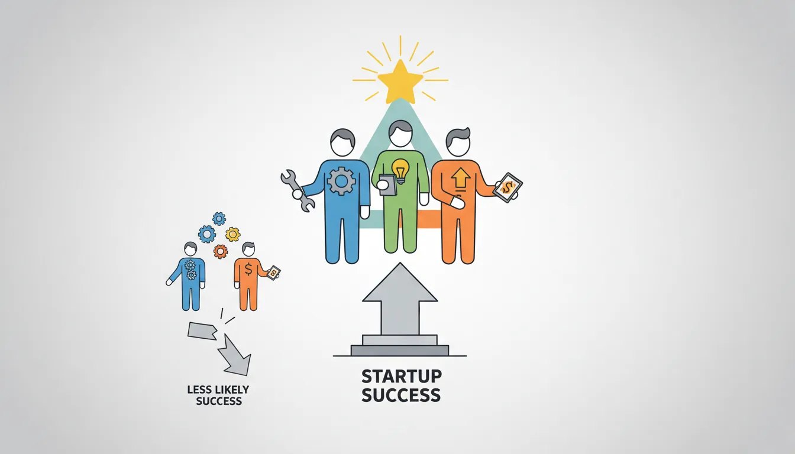
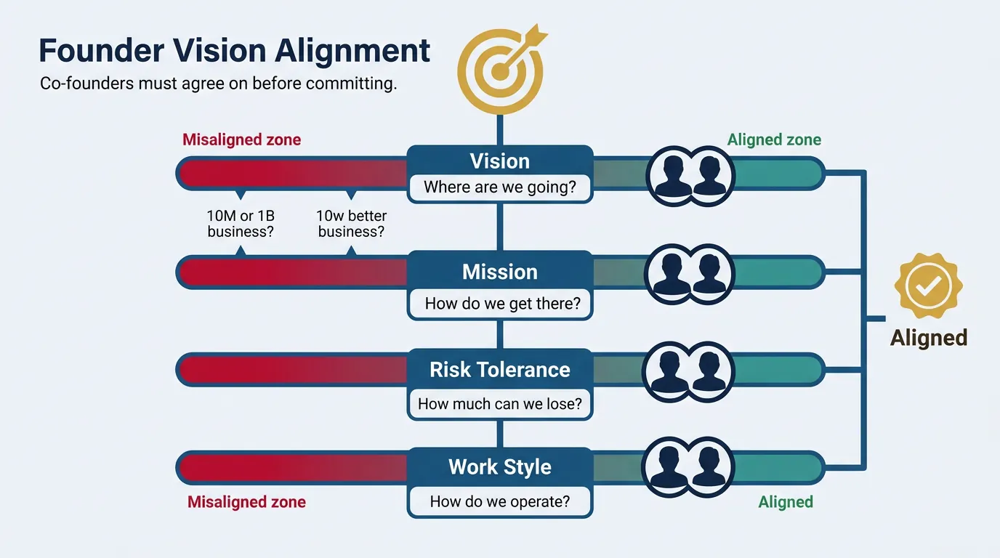
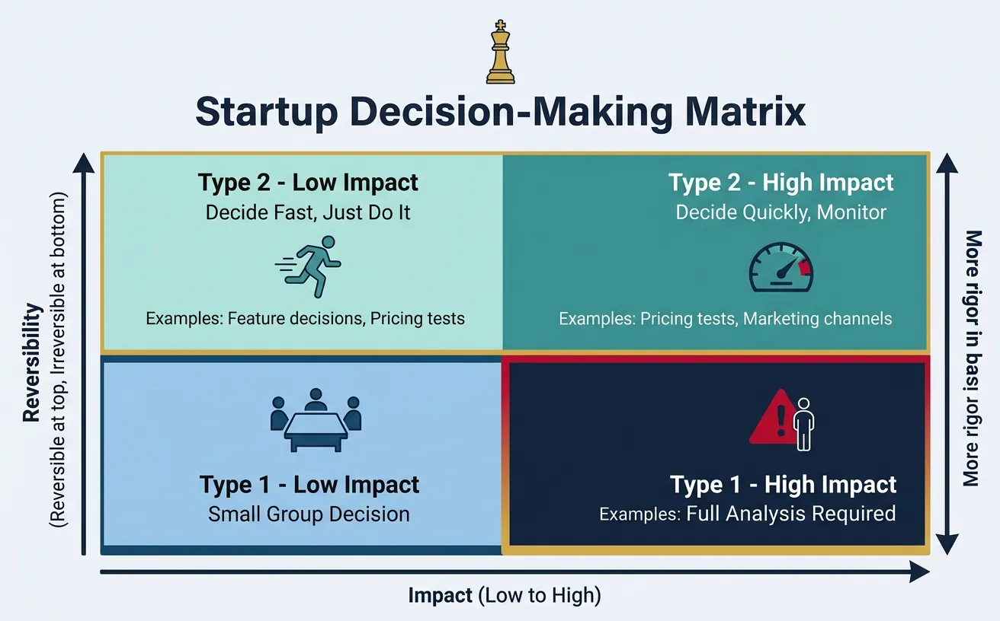
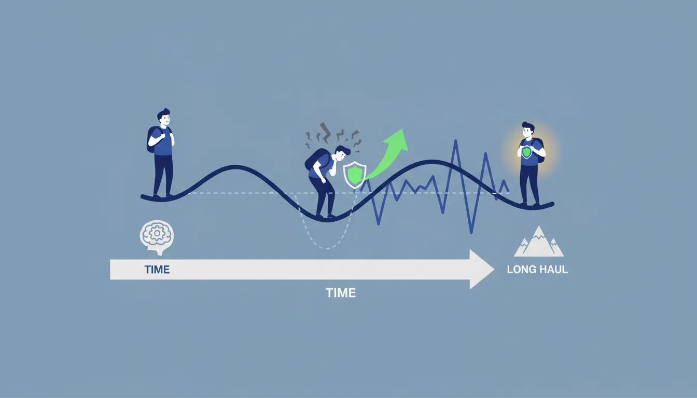
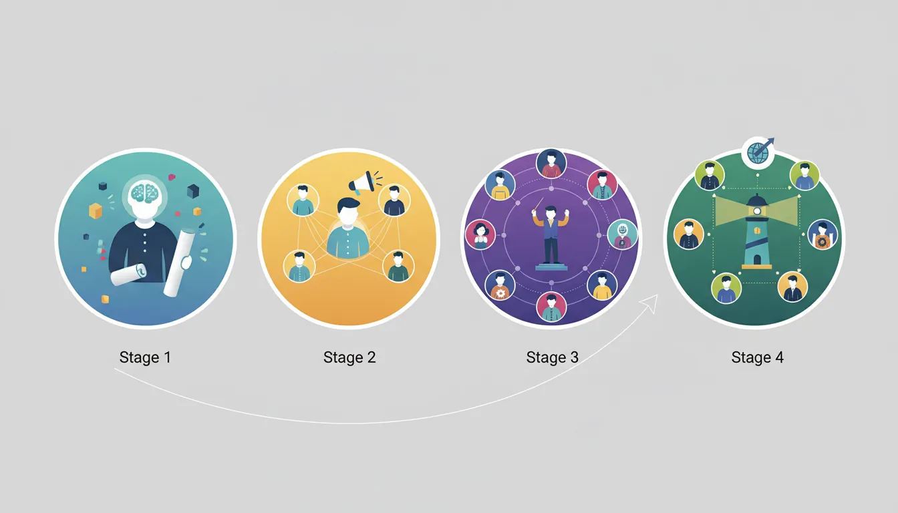

1. Introduction
Your founding team is the single most important factor in your startup's success. This guide covers how to find the right co-founders, structure equity fairly, and develop the leadership skills you need to guide your company through the early stages.

Complete Startup Journey
Ideation & Opportunity Recognition
Problem discovery, market gaps, idea generation frameworksIdea Validation & MVP Prototyping
Customer discovery, landing pages, prototype testingBusiness Models & Canvas
BMC, lean canvas, revenue models, value propositionsLean Startup Methodology
Build-measure-learn, pivoting, validated learningFundraising & Financial Modeling
VC, angels, SAFE notes, cap tables, financial projectionsBuilding Your Founding Team
Co-founder selection, equity splits, team dynamicsHiring & Company Culture
Recruiting, culture building, OKRs, team scalingScaling Operations & Growth Hacking
Growth loops, viral mechanics, operational scalingMarketing Campaigns & Digital Growth
CAC/LTV, digital marketing, positioning, channelsLegal, Financial & Risk Foundations
Entity structure, IP, compliance, burn rate managementData-Driven Decision Making
SaaS metrics, NPS, analytics dashboards, A/B testingExit Strategies & Investor Pitches
Valuations, pitch decks, M&A, IPO preparationStartup Ecosystem & Networking
Accelerators, mentors, communities, ecosystem mappingInnovation, Technology & Future Trends
Emerging tech, AI/ML, deep tech, future marketsCapstone Projects & Portfolio
Comprehensive startup plan, portfolio presentation2. Identifying Co-Founder Skill Gaps
The ideal founding team covers three core competencies: building the product (technical), selling the product (commercial), and running the business (operational). Most successful startups have 2-3 founders with complementary skills.
Think of co-founders like a three-legged stool: Hacker (builds), Hustler (sells), Hipster (designs). Remove any leg and the stool falls. You don't need three people—one person can cover multiple legs—but all three functions must be strong.
The Skill Matrix
Founding Team Competency Map:
TECHNICAL (Hacker) COMMERCIAL (Hustler) OPERATIONAL (Hipster/CEO)
├── Software development ├── Sales & BD ├── Strategy & vision
├── Architecture/infra ├── Marketing ├── Finance & legal
├── Data science/ML ├── Customer success ├── HR & culture
├── Product management ├── Partnerships ├── Operations
└── Technical leadership └── Fundraising └── Board management
ASSESSMENT QUESTIONS:
• Can we build the product ourselves? (Tech coverage)
• Can we acquire customers ourselves? (Commercial coverage)
• Can we run the company ourselves? (Operational coverage)
Finding Your Co-Founder
| Source | Strength | Risk | Best Approach |
|---|---|---|---|
| Former Colleagues | Know work style, proven trust | Similar network/skills | Ideal if complementary skills |
| School Alumni | Shared values, long history | Friendship vs. partnership | Best if worked together on projects |
| Startup Events | Self-selected for entrepreneurship | Unknown track record | Do a trial project first |
| Y Combinator/Founder Matching | Pre-vetted, motivated | No shared history | Extended "dating" period essential |
| Online Communities | Wide reach, specific skills | High noise-to-signal | Use as starting point, vet deeply |
Co-Founder Compatibility Scorecard
Rate compatibility across 8 dimensions (1-10). Get an overall compatibility assessment.
All data stays in your browser. Nothing is sent to or stored on any server.
The Co-Founder Dating Process
Never rush into a co-founder relationship. The median startup takes 7-10 years to exit—that's longer than most marriages. Use this framework:
The 90-Day Co-Founder Trial
Days 1-30: Discovery Phase
- Have 10+ hours of deep conversations about vision, values, risk tolerance
- Discuss worst-case scenarios: What if we fail? What if one of us wants to leave?
- Talk about money expectations, lifestyle, time commitment
Days 31-60: Working Phase
- Work together on a small project (hackathon, prototype, pilot customer)
- Observe work style: How do they handle stress? Disagreement? Ambiguity?
- Evaluate contribution: Do they deliver? Are they proactive?
Days 61-90: Commitment Phase
- Draft founder agreement with vesting
- Define roles, responsibilities, decision-making process
- Make the decision: commit or part ways amicably
Red Flags to Watch For
• Different risk tolerance (one wants to quit job, one wants to stay employed)
• Misaligned timelines (one wants quick exit, one wants to build for decades)
• Unable to have difficult conversations
• Past pattern of abandoned projects or partnerships
• Wants title/equity but not willing to vest
• Doesn't respect your expertise in your domain
3. Founder Agreements & Equity
Founder equity splits and agreements are among the most important decisions you'll make. Get this wrong, and it can destroy the company. Get it right, and it creates alignment for years.
Equity Splits
The #1 question founders ask: "How should we split equity?" The answer depends on contributions—past, present, and future.
Factors to Consider
| Factor | Weight | Questions to Ask |
|---|---|---|
| Idea Origination | 5-10% | Who conceived the original concept? How validated is it? |
| Domain Expertise | 10-20% | Who has unique knowledge/connections in this space? |
| Execution Ability | 20-30% | Who can actually build and ship the product? |
| Commitment Level | 20-30% | Who's going full-time first? Who's taking most risk? |
| Future Contribution | 20-30% | Who'll be most critical over the next 4-5 years? |
Common Equity Split Patterns:
EQUAL SPLIT (50/50 or 33/33/33)
├── Pros: Simple, feels fair, avoids arguments
├── Cons: Doesn't reflect actual contribution
└── Best when: Similar contributions, deep trust, long history
ROLE-BASED SPLIT (60/40 or 50/30/20)
├── Pros: Reflects different roles and contributions
├── Cons: Requires honest assessment, can feel unfair
└── Best when: Clear skill differences, one person has head start
CEO PREMIUM (60-70% to CEO, rest to others)
├── Pros: Clear leadership, CEO incentive
├── Cons: Can demotivate others, not always deserved
└── Best when: One person is clearly the driving force
Equity Split Calculator
Rate each founder (1-5) across 8 weighted factors. The calculator determines fair equity splits based on contribution.
All data stays in your browser. Nothing is sent to or stored on any server.
Rate each founder 1-5 (Idea 10%, Domain 15%, Full-Time 20%, Capital 15%, Network 5%, Technical 15%, Business 10%, Opportunity Cost 10%)
Research by Noam Wasserman shows equal splits correlate with lower company value. Why? They often avoid hard conversations about contribution. However, equal splits work when combined with vesting—time will correct any imbalance.
Vesting Schedules
Vesting protects everyone. If a co-founder leaves after 6 months, they shouldn't walk away with 50% of the company. Standard vesting ensures equity is earned over time.
Standard 4-Year Vesting with 1-Year Cliff
How Vesting Works (4-year, 1-year cliff):
Year 0 Year 1 Year 2 Year 3 Year 4
│ │ │ │ │
│ CLIFF │─────────────────────────────────────────│
│ (0% vests) │ Monthly vesting (1/48 per month) │
│ │ │ │ │
▼ ▼ ▼ ▼ ▼
0% 25% 50% 75% 100%
Example: Founder with 40% equity
• At 6 months: Leaves → Gets 0%
• At 1 year: 25% of 40% = 10% vested
• At 2 years: 50% of 40% = 20% vested
• At 4 years: 100% of 40% = 40% vested
Vesting Variations
| Variation | Structure | When to Use |
|---|---|---|
| Standard | 4 years, 1-year cliff, monthly vesting | Default for most startups |
| Double Trigger Acceleration | Accelerate on acquisition + termination | Protect founders in M&A |
| Milestone-Based | Vest on achieving specific goals | Performance-focused teams |
| Back-Weighted | More vests in later years | Encourage long-term commitment |
| Founder-Friendly | Shorter cliff or immediate vesting | Established founders with track record |
The Founder Agreement Document
Beyond equity, a founder agreement should cover critical scenarios. Here's what to include:
Founder Agreement Key Clauses:
1. EQUITY & VESTING
├── Ownership percentages
├── Vesting schedule
├── Cliff period
└── Acceleration triggers
2. ROLES & RESPONSIBILITIES
├── Titles (CEO, CTO, etc.)
├── Decision domains
└── Time commitment expectations
3. COMPENSATION
├── Initial salary (or lack thereof)
├── When salaries start
└── How raises are decided
4. INTELLECTUAL PROPERTY
├── All IP belongs to company
├── Prior inventions excluded
└── Confidentiality obligations
5. DEPARTURE SCENARIOS
├── What happens if someone leaves voluntarily
├── What happens if someone is asked to leave
├── Buyback rights for unvested shares
└── Non-compete/non-solicit terms
6. DECISION-MAKING
├── Day-to-day: CEO decides
├── Major decisions: Unanimous or majority
├── Deadlock resolution
└── Board composition rights
Exercise: Draft Your Founder Agreement
Answer these questions with your potential co-founder:
- What percentage should each founder receive? Show your reasoning.
- What's the minimum commitment (hours/week) expected from each?
- What happens if one founder wants to take a full-time job elsewhere?
- What decisions require unanimous consent vs. CEO decision?
- If you disagree on a critical decision and can't resolve it, what's the tiebreaker?
4. Team Alignment
Alignment means everyone rowing in the same direction. Misalignment—even on small things—creates friction that compounds over time.

Vision & Mission Alignment
Your vision is where you're going. Your mission is how you get there. Founders must agree on both.
Vision Alignment Questions
Have This Conversation Before Committing:
1. SCALE AMBITION
"Is this a $10M business or a $1B business?"
"Would you take $50M acquisition offer in year 2?"
2. TIMELINE
"How long are you willing to work on this?"
"What's your exit timeline: 5 years? 10? Never?"
3. WORK STYLE
"How many hours/week do you expect to work?"
"Are you willing to relocate if needed?"
4. RISK TOLERANCE
"How much savings would you spend before quitting?"
"Would you take a 50% pay cut? For how long?"
5. ULTIMATE GOAL
"Do you want to run a public company?"
"Is this about money, impact, or building something?"
Defining Founding Culture
Culture is set by founders from day one. It's not a document—it's how you behave when no one's watching.
"Culture is what people do when leadership isn't in the room." — Ben Horowitz
The behaviors you tolerate, the people you hire, the decisions you make under pressure—these define your culture, not posters on walls.
Core Values Exercise
Each founder independently writes their top 5 values. Then compare:
| Value Category | Examples | What It Means in Practice |
|---|---|---|
| Speed vs. Quality | "Move fast and break things" vs. "Get it right" | How you ship products, make decisions |
| Transparency | Open salary/equity vs. need-to-know | What you share with employees, board |
| Work-Life Balance | "Work hard, play hard" vs. "Sustainable pace" | Expected hours, vacation, flexibility |
| Hierarchy | Flat org vs. clear chain of command | How decisions get made, who has authority |
| Risk Appetite | "Swing for fences" vs. "Calculated bets" | How you approach investments, pivots |
5. Early Leadership Challenges
Leadership in a startup is different from leadership in established companies. You're leading through uncertainty, with limited resources, and often learning the job while doing it.

Decision-Making in Chaos
Startups face hundreds of decisions with incomplete information. Good founders develop frameworks to decide quickly and course-correct.
Decision-Making Framework for Founders:
┌───────────────────────────────────────────────────────────┐
│ DECISION CLASSIFICATION │
├───────────────────────────────────────────────────────────┤
│ │
│ REVERSIBLE (Type 2) │ IRREVERSIBLE (Type 1) │
│ ├── Feature decisions │ ├── Firing founders │
│ ├── Pricing experiments │ ├── Equity grants │
│ ├── Marketing campaigns │ ├── Legal structure │
│ ├── Hiring contractors │ ├── Major pivots │
│ └── Tool/vendor choices │ └── Large fundraises │
│ │ │
│ → Decide FAST │ → Decide CAREFULLY │
│ → Empower team │ → Involve all founders │
│ → Accept 70% confidence │ → Seek 90% confidence │
│ │ │
└───────────────────────────────────────────────────────────┘
Founder Conflict Resolution
Conflict between founders is inevitable. How you handle it determines whether it strengthens or destroys the relationship.
The COIN Framework for Difficult Conversations
| Step | Description | Example |
|---|---|---|
| C - Context | Set the scene objectively | "In our last three investor meetings..." |
| O - Observation | State what you observed (facts, not judgments) | "...you interrupted me when I was explaining our metrics" |
| I - Impact | Explain the impact on you/the company | "I felt undermined, and the investors seemed confused about our roles" |
| N - Next Steps | Propose a way forward | "Can we agree on who leads which topics in future meetings?" |
Delegation as a Founder
Founders often struggle to delegate because they can do tasks faster themselves. But this doesn't scale—and it burns you out.
If someone can do a task 70% as well as you, delegate it. You're not just freeing up time—you're developing people and testing their potential. Your job is to work ON the business, not IN it.
Delegation Matrix:
ONLY YOU CAN DO OTHERS CAN DO
─────────────────────────────────────────
HIGH IMPACT │ Vision & strategy │ Customer calls │
│ Fundraising │ Sales outreach │
│ Key hires │ Marketing │
│ Major partnerships │ Product features │
─────────────────────────────────────────
LOW IMPACT │ (Eliminate these) │ Admin tasks │
│ Status meetings │ Scheduling │
│ Unnecessary travel │ Expense reports │
│ Inbox management │ Research │
─────────────────────────────────────────
Action: Delegate lower-right. Eliminate lower-left. Focus upper-left.
6. Emotional Intelligence & Resilience
Startups are emotional rollercoasters. In the same week, you might land a major customer and lose a key employee. Emotional intelligence (EQ) helps you navigate these swings.

The Founder Emotional Journey
Typical Founder Emotional Pattern:
Excitement ●
╱ ╲
╱ ╲ ● Product Launch
╱ ╲ ╱ ╲
╱ ╲ ╱ ╲ ● Series A
╱ ╲ ╱ ╲ ╱ ╲
╱ ╲╱ ╲ ╱ ╲
─────●─────────────●────────╲──╱─────●───────────────────→ Time
│ │ ╲╱ │
Launch MVP Trough Growth
Day Pivot of
Despair
The "Trough of Despair" is universal. Knowing it's coming helps you survive it.
Building Resilience
| Practice | What It Does | How to Implement |
|---|---|---|
| Physical Health | Maintains energy, reduces stress hormones | Exercise 3x/week, protect sleep, limit alcohol |
| Mental Health | Processes emotions, prevents burnout | Therapy, coaching, journaling, meditation |
| Support Network | Provides perspective, venting, advice | Founder groups, mentors, friends outside work |
| Boundaries | Prevents 24/7 work from destroying you | No-work hours, vacations, hobbies |
| Perspective | Remembers this is a job, not your identity | "I'm a person who runs a startup, not a startup" |
Case Study: Brian Chesky on Founder Mental Health
Airbnb CEO Brian Chesky has been open about the mental health challenges of founding:
"In 2020, Airbnb lost 80% of its business in 8 weeks. I thought about shutting down. What got me through: therapy, exercise every morning, and remembering that this too shall pass."
Key Insight: Even billion-dollar founders struggle. Seeking help is a sign of strength, not weakness.
7. Leadership Frameworks for Scaling
The leadership skills that get you to 10 employees won't get you to 100. Founders must evolve their leadership style as the company grows.

Leadership Evolution by Stage
How Founder Role Changes:
STAGE 1: DOER (0-10 employees)
├── You do most work yourself
├── Direct involvement in everything
├── Leadership = leading by example
└── Time split: 80% doing, 20% managing
STAGE 2: MANAGER (10-50 employees)
├── You manage people who do the work
├── Setting goals, providing feedback
├── Leadership = enabling others
└── Time split: 50% managing, 30% doing, 20% strategy
STAGE 3: LEADER (50-200 employees)
├── You manage managers
├── Defining culture, hiring executives
├── Leadership = setting direction
└── Time split: 60% strategy, 30% managing managers, 10% doing
STAGE 4: EXECUTIVE (200+ employees)
├── You lead through vision and culture
├── Board management, external relationships
├── Leadership = inspiring organization
└── Time split: 80% strategy/external, 20% internal leadership
Key Leadership Frameworks
1. Situational Leadership
Match your leadership style to the team member's development level:
| Employee Level | Your Style | What to Do |
|---|---|---|
| D1: Low skill, high motivation (new hire) | Directing | Tell them exactly what to do |
| D2: Some skill, low motivation (disillusioned) | Coaching | Explain why, involve in decisions |
| D3: High skill, variable motivation | Supporting | Facilitate, share decision-making |
| D4: High skill, high motivation (star) | Delegating | Set goals, get out of the way |
2. The Manager's Path
"The Manager's Path" by Camille Fournier is the definitive guide for technical founders becoming leaders. Key concept: your job shifts from "getting things done" to "getting things done through others."
3. High Output Management
Andy Grove's framework: Output = Team Output × Leverage
Increase output by:
- Increasing leverage: One training session teaches 20 people (20x leverage)
- Improving team output: Hire better, train more, remove blockers
- Focusing on high-leverage activities: What you do matters more than how hard you work
8. Conclusion & Next Steps
With your founding team in place, you're ready to scale by hiring talented people and building a strong company culture.